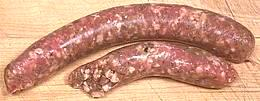

SAFARI
Users
Products
Lamb Sausage - Moroccan
 The photo specimens, obtained fresh from a Whole Foods Market, were 7 inches long, 1 inch in diameter and weighed 3 ounces. Lamb, spices (black pepper, cumin, coriander), sea salt, citric acid, natural lemon flavor, canola oil, and natural lamb casings. This formulation is fine for the flavor of North African recipes, but doesn't assure kosher / halal if the animals have not been slaughtered and prepared in accordance with religious rituals.
This is a rather spicy sausage, though the "hot" aspect comes from
black pepper rather than chilis. The cumin and coriander are fairly
assertive as well. In cooking it exudes quite a bit of both oil and
water, so for browning you want to use a fairly high heat (and there
will be a lot of splattering). Grilling over hot coals will get better
browning than frying, but frying works fine too. The overall effect
is significantly drier than a pork sausage but moist enough to be
enjoyable, and of course the flavor is different.